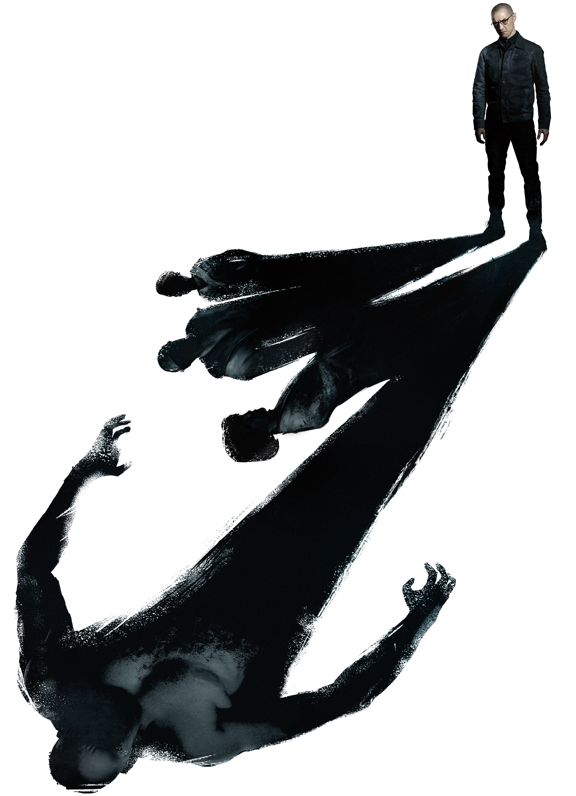
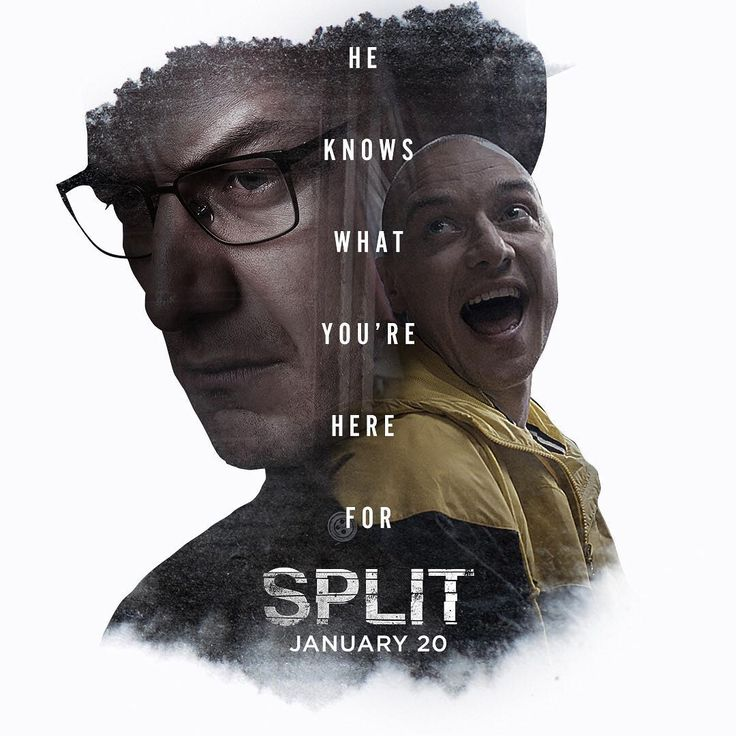
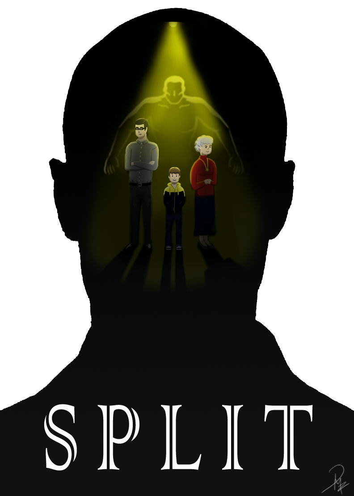
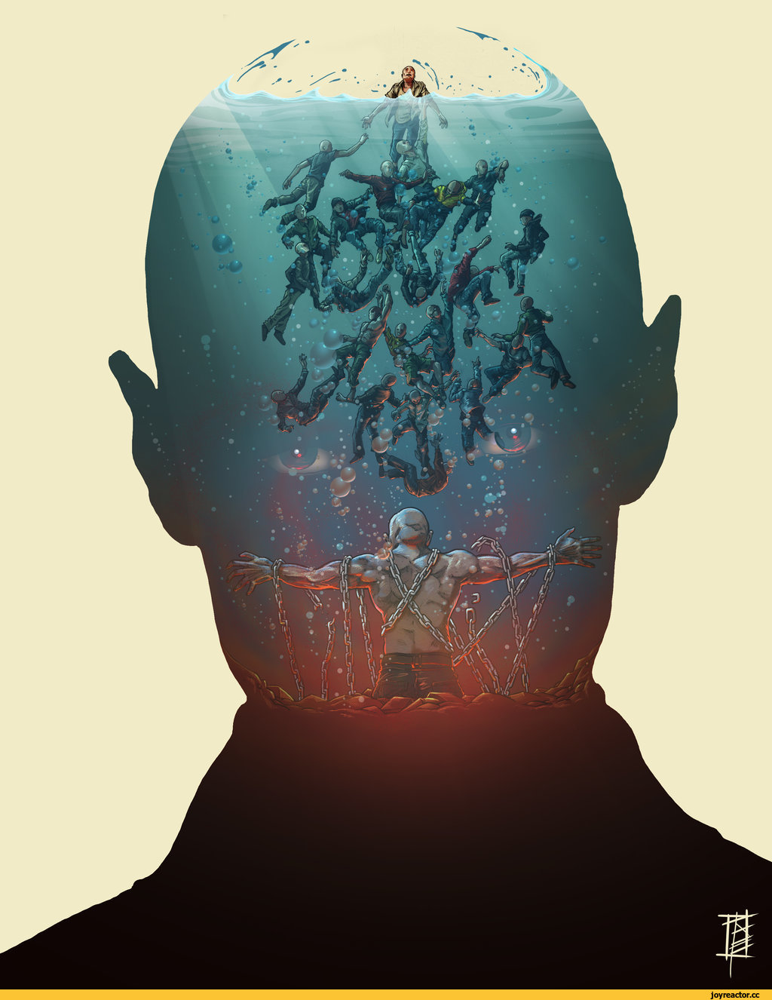
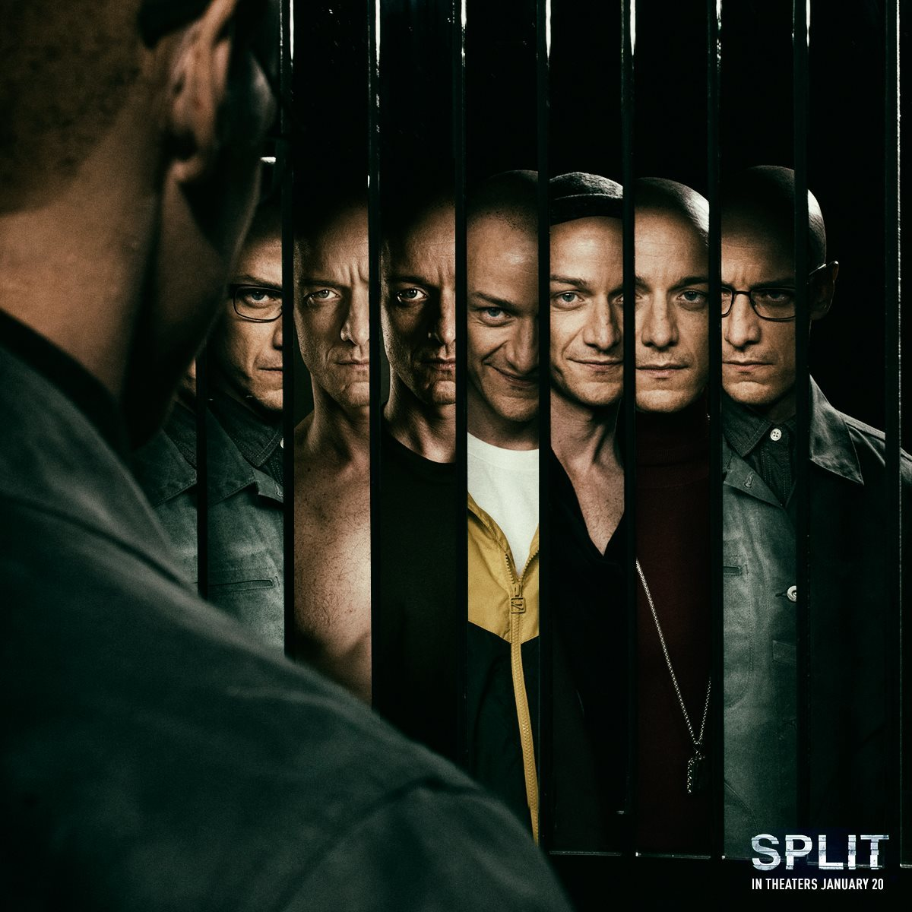

#1 Like Kevin Wendell Crumb, a real person by the name of Billy Milligan was diagnosed with multiple personality disorder with 24 personalities inside him. His condition was used in his defense for crimes he said was committed not by him but his other personalities.

#2 In Kevin's therapist's house, you can see that one of the books on the library in the background is titled "Sybil." This was the pseudonym given to a real-life woman with 16 personalities.

#3 The forest shotgun scene very closely mirrors the kitchen gun scene in Неуязвимый (2000). Many of the lines are exact quotes.

#4 James McAvoy broke his hand while filming on location in Philadelphia. He continued to perform his role for days before letting on that he was injured and finally sought attention at a local UrgentCare. As a result he was forced to work with an injury on the set of Atomic Blonde (2017) as well.

#5 On Kevin's computer, there are QuickTime files of his various personalities. The one in the bottom right corner is Mr. Pritchard. This is likely a reference to the character Lionel Pritchard from Signs (2002), also directed by M. Night Shyamalan.